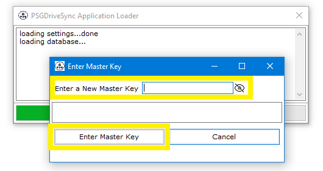
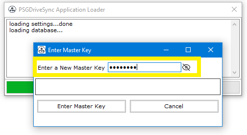
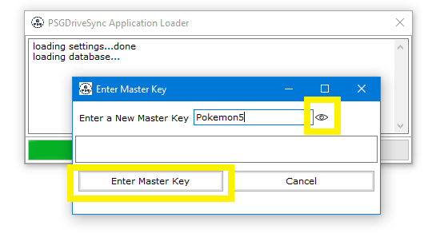
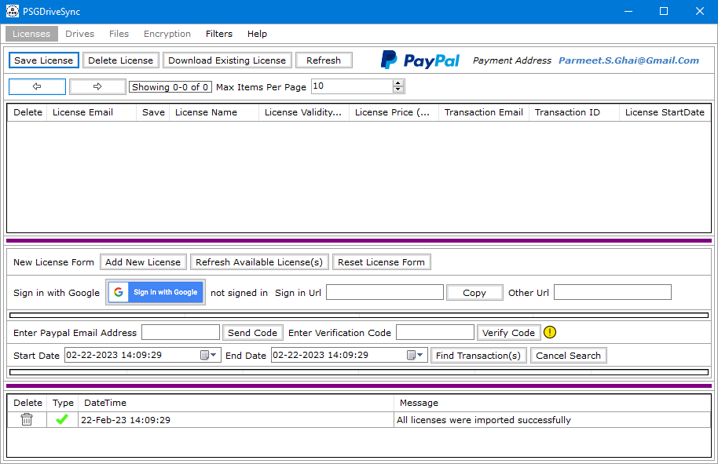

When the application starts up for the first time, it will immediately ask you to enter a new master key. At that point you can enter any text of your choosing which is at least 8 characters long and the application will go ahead and use it as your new "Master Key". This master key will then be used to encrypt all of the information contained inside the application's local database thus keeping your information secure and protected. Following are the steps needed to be performed in order to setup a new master key for the first time.
|
1 |
Start the application by double clicking on "PSGDriveSync.exe". That should open the application launcher along with a pop up box containing a text box saying "Enter a New Master Key". |
 |
|
2 |
Type in a new master key in the text box saying "Enter a New Master Key". This key can be alpha numeric and can contains special characters but it has to be at least 8 characters long. |
 |
|
3 |
To make sure that you have typed in the correct master key, please go ahead and click on the "Visibility" icon to see what you have typed in. Once you are satisfied with the key that you have typed in then go ahead and click on the button labelled "Enter Master Key". This will setup your master key for the very first time. |
 |
|
4 |
To make sure that you have the master key memorized, you can go ahead and close the application then start the application
one more time using your existing master key and see if that works or not. |
 |